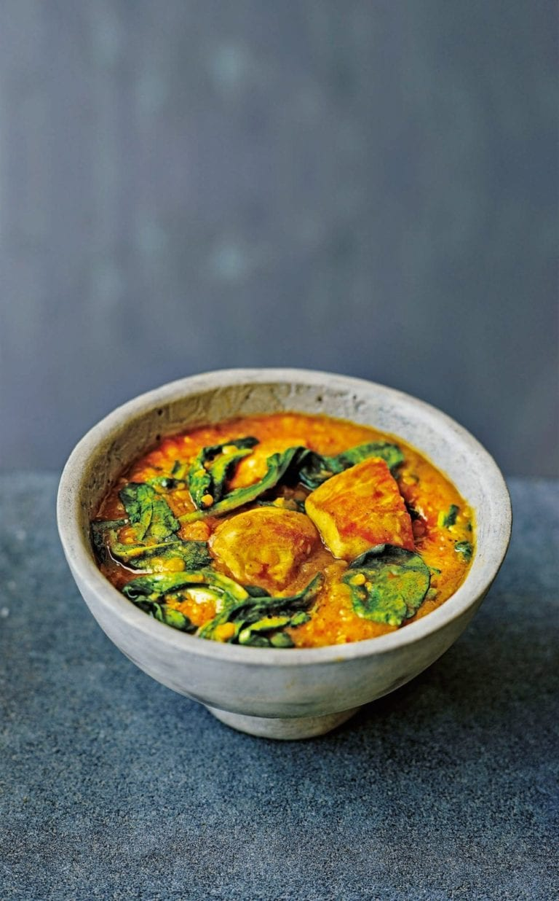

Chicken Curry

Dale Pinnock's red lentil and chicken curry recipe helps to lower cholesterol and it's rich in soluble fibre.
Ingredients
- Olive oil for frying
- 2 large red onions
- 6 garlic cloves
- 400g red lentils
- 1.5L vegetable stock
- 6 skinless chicken breasts
- 2-3 tbsp madras curry paste
- 300g baby leaf spinach
- Natural yoghurt to serve
Steps
- Heat a little olive oil in a very large pan, add the onions and garlic, then fry for 4-5 minutes until
softened. Add the lentils and a little of the stock and simmer. Keep adding small amounts of stock, bit by bit,
as the lentils cook and soften, as if you were cooking a risotto.
- Once the lentils start to break down, add the chicken and curry paste and stir well. Keep simmering and
adding stock for 20-25 minutes until the chicken is cooked and you've added all the stock.
- Add the baby spinach at the Last minute, a handful at a time, season with salt and pepper and stir
until the spinach has wilted. Serve immediately, with a dollop of yogurt on the side if you like.